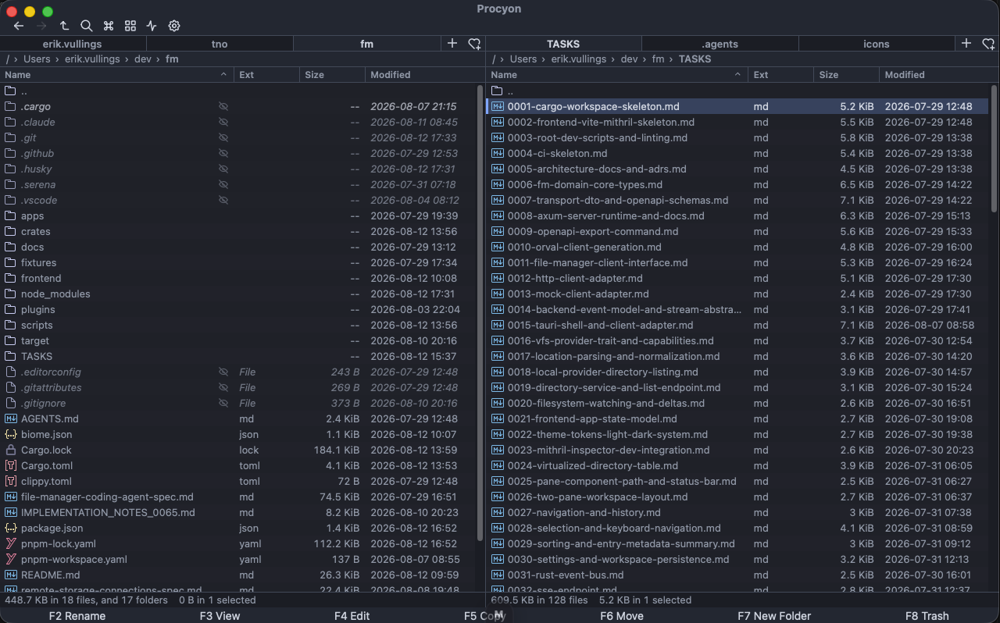
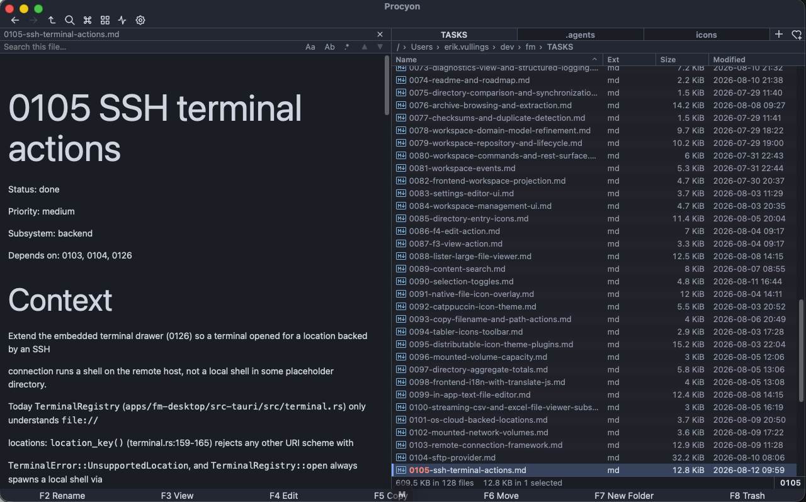
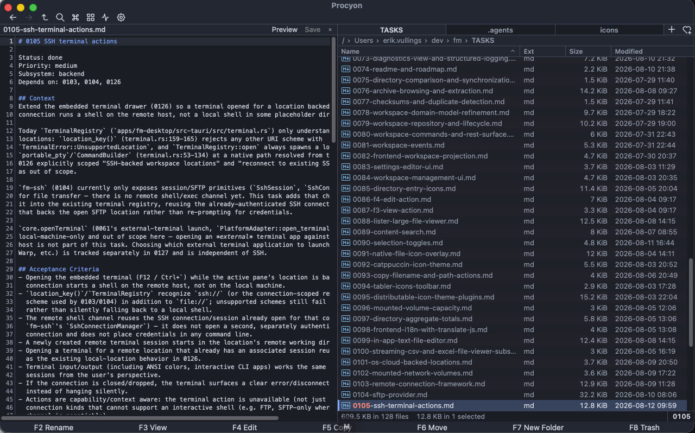
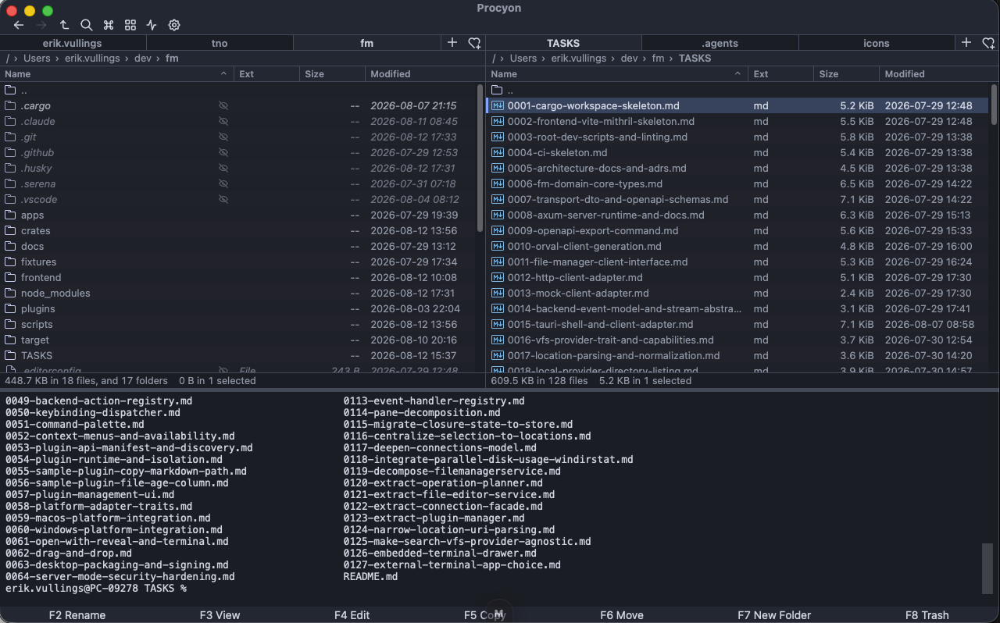
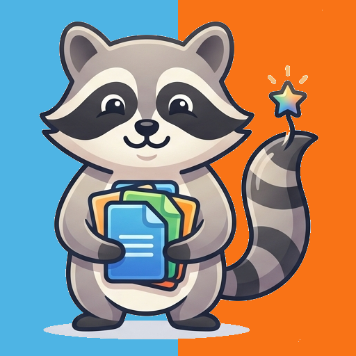

Virtualized dual-pane table
Only visible rows render, so a million-entry directory stays fluid. Draggable splitter, per-pane tabs, breadcrumb path bar, sortable columns with a git-status badge, and Ctrl/Cmd+L path editing.
Tab⌘L
Procyon — Latin for raccoon — is a keyboard-first dual-pane file manager. Local folders, archives, and SSH hosts share one pane-wise workflow, powered by a Rust operation engine and a virtualized table that holds its own at a million entries.
● Ships as a Tauri desktop app & runs in the browser

Every mutation runs through the Rust operation engine. No filesystem writes from the UI, ever.
Only visible rows render, so a million-entry directory stays fluid. Draggable splitter, per-pane tabs, breadcrumb path bar, sortable columns with a git-status badge, and Ctrl/Cmd+L path editing.
Single files and whole trees stream through conflict-safe copy and move. Shared-destination checks kill accidental writes before they start.
Move to the OS Trash or Recycle Bin by default; permanent delete stays one deliberate, confirmed step away.
Inline F2 editing plus a batch tool with search/replace, prefix/suffix, sequence and case — live preview before you apply.
Cursor and selection stay independent, keyed by stable IDs. Invert, select-by-mask, range select, and type-to-select prefix matching.
Multiple tabs per pane, bookmarks and recent locations, saved workspaces that restore your layout — plus an Alt+F10 directory-tree sidebar with lazy expansion across every provider.
Deep filesystem search plus literal content search across files, served by a dedicated Rust search engine.
Fuzzy-search every action — built-in and plugin-provided — with shortcuts, availability, and parameter prompts.
A Lister-style viewer that opens huge files with lazy search, plus an in-app text editor with Markdown preview.
zip, tar and friends open like folders — browse, extract and add files, password-protected archives included.
Drag between panes, onto tabs, or into Finder and Explorer. Native drops queue through the same conflict-safe engine.
Themeable icon sets with optional native macOS file-icon overlay, shipped as distributable plugins.
The F3 viewer opens huge files instantly with lazy search. The F4 editor edits in-app with a Markdown preview pane — no app hopping.
Grid/icon view adds three icon sizes, photo-day grouping and type filtering, with image, video, PDF and CBZ/CBR thumbnails served by the backend.
The Properties dialog shows byte-precise sizes, timestamps and permissions — and aggregates totals across a multi-selection. On macOS, Finder tags and Spotlight comments round-trip with Finder itself.


Long-running work is a bounded Rust scheduler, not a spinner. Each copy, move, rename or delete is a typed job with lifecycle, progress and a smoothed transfer rate — cancellable, pausable and resumable at safe boundaries.
Conflicts resolve up front with ask, overwrite, rename-new or skip. Queued jobs wait in FIFO order, and the last 100 outcomes stay in a terminal history so you always know what ran.
SFTP and FTP/FTPS roots live beside local folders in the same two-pane engine — copy local ↔ remote and remote ↔ remote streams through the exact same operation jobs, with server-native rename when both sides share a connection. Session pooling keeps transfers moving, and remote change tracking keeps the view honest.
Host keys are never auto-accepted: a changed key becomes a visible status you must explicitly confirm. Credentials stay as opaque references in your macOS Keychain or Windows Credential Manager, never in the profile itself.
The embedded terminal drawer opens a real remote shell over SSH for any location backed by a connection — no window hopping.

Plugins declare a manifest and a permission set, then contribute actions, columns and icon themes from a restricted Lua sandbox — resource-limited, diagnostics-bounded, auto-disabled after repeated failures.
Turns the current path into a clickable [text](path) link on your clipboard.
Adds a host-rendered column that shows how old each entry is, sorted by raw modification time.
contrib · columnA distributable icon theme layered over the default set, switchable from the plugin manager.
theme · iconsPlugin actions register in the same action registry as built-ins, so they arrive in the command palette and context menus automatically — with permission checks and isolation handled by fm-plugin-runtime.
Full file-icon, trash, reveal and terminal integration on macOS today; drag-out already works on Windows; every host gets the same browser-mode core.
brew install --cask procyonchoco install procyonsudo apt install ./procyon.debProcyon is built from a Rust workspace — Axum server, Tauri 2 desktop shell, VFS providers for local, SFTP and archive storage — with a Mithril + TypeScript frontend. One OpenAPI contract drives the HTTP client, the desktop IPC and the mock runtime from a single definition.
Work is tracked task-by-task in the repo, milestone against milestone. The dual MIT / Apache-2.0 license keeps it usable anywhere you please.
Free, open source, and local-first. Install it, connect a server, and let Procyon do the gathering.
